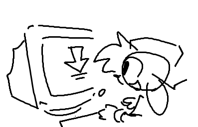
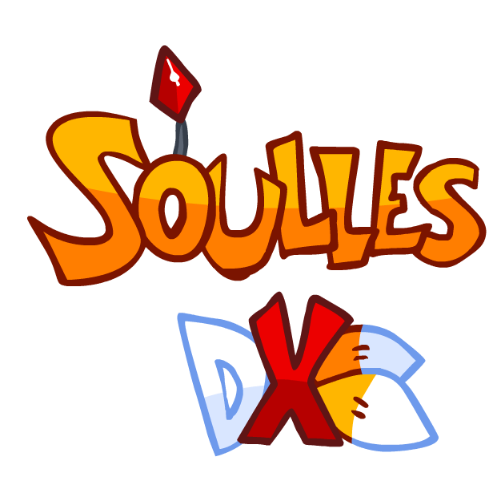
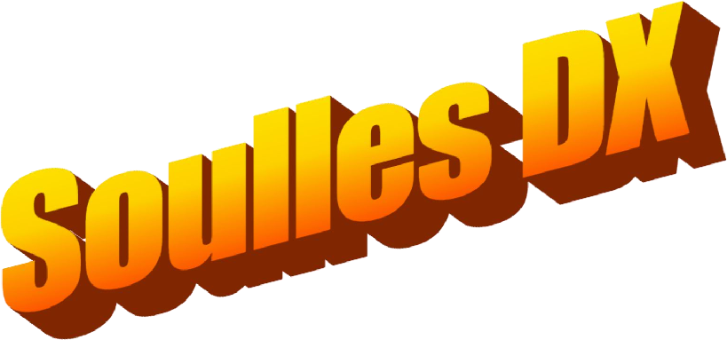

Welcome to the OFFICIAL Soulles DX webpage!
|
uhhh links idk |
 choose your downloads!LATEST BUILDThe latest version of Soulles DX! mostly rebuilt from the ground-up, this version features the three main songs of the mod (Soulless, Sunshine, Sunshine Encore). This should be the most finished version of the mod if it's out already, this is a placehodl Looking for older versions? The first version of Soulles DX, created by Gray in 2022 with help from YoshiCrafter29. It features outdated versions of Milk and Sunshine Encore, a few joke songs, and scrapped songs such as Prey (Good Future Mix), and Male-Addiction. The second version of Soulles DX, created after Yoshi Engine stopped it's development. This version features outdated versions of Ponytown, Bitchin, Azerty, and Ice Cube. This version is very unfinished, with most stages missing their mechanics and other important parts. Early versions of DLC 1 and 2 songs are in this build |
other struff!!! yeahhh Designed by @PaigeyPaper biig fat massive thanks and shoutouts to @krz0001 for helping and teaching me to make this!! |